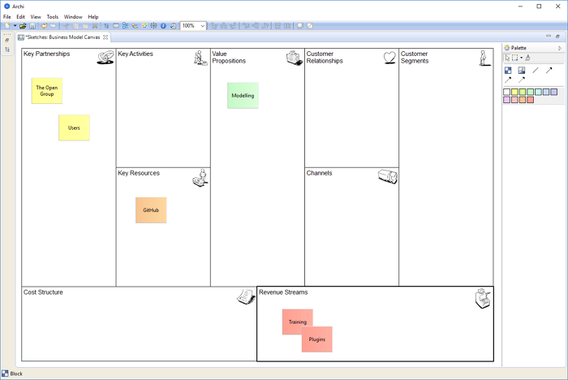

L'outillage de modélisation de canevas est une extension d'Archi du même genre que la vue schématique et qui vous fournit les outils vous permettant de créer et de modifier un "Canevas" tel que le Canevas du modèle métier. Avec l'outillage de modélisation de canevas, vous pouvez concevoir et créer des modèles de canevas réutilisables que vous pourrez partager avec des collègues ou simplement utiliser comme un outil de conception préalable pour dessiner vos idées et vos modèles. Vous pouvez également lier d'autres vues dans votre modèle; vous pourriez par exemple lier depuis une vue Archimate vers une vue du canevas de modèle métier pour fournir un plan métier (Business Plan).
Le canevas de modèle métier dans Archi
Le canevas du modèle métier est soumis à la licence Creative Commons Attribution-Share Alike 3.0 Unported License